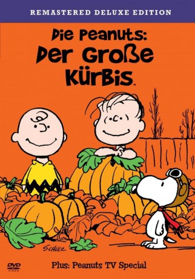

#10273 Die Peanuts - Der große Kürbis
Alternativ: It's the Great Pumpkin, Charlie Brown (Englischer Titel)
 
 IMDB-Wertung: 8.2 / 10
IMDB-Wertung: 8.2 / 10  Metascore: 0
Metascore: 0 
Während sich sämtliche Kinder auf Halloween vorbereiten und selbst Charlie Brown eine Einladungskarte für eine der vielen Parties in seinem Briefkasten vorfindet ( die er aber nur erhielt, weil die Gästelisten verwechselt wurden), denkt Linus nur an die Ankunft des "Großen Kürbis". Voraussetzung für diese Erscheinung ist allerdings höchster Respekt und kein Anflug von Zweifel, so dass Linus erhebliche Kämpfe gegenüber seiner skeptischen Umwelt ausfechten muß. Erwartungsvoll verharrt er des Nachts in einem großen Kürbisfeld, während alle anderen feiern und Streiche spielen...
Jahr: 1966
Dauer: 24 Minuten
FSK:
Land: USA Studio: CBSTonspuren: DD2.0 - ,
Untertitel:
Auflösung: 1080p (1488x1080) Größe: 1361 MB
Genre: Komödie, Animation/Trick, Familie, Kurzfilm
Regisseur: Bill Melendez
Drehbuch: Charles M. Schulz, Charles M. Schulz
Soundtrack: Vince Guaraldi
Darsteller:
- Christopher Shea als Linus Van Pelt
- Bill Melendez als Snoopy
- Peter Robbins als Charlie Brown
- Sally Dryer als Lucy Van Pelt
- Cathy Steinberg als Sally Brown
- Ann Altieri als Frieda / Violet
- Lisa DeFaria als Patty
- Glenn Mendelson als Schroeder / Shermy
- Gabrielle DeFaria Ritter als Pigpen
Datei: X:\Kinder Collections\Peanuts\Peanuts - Der große Kürbis, Die (1966, FSK, 1488x1080).mkv seit 27.12.2018
Festplatte: Kinder-Filme+Trick
 Es gibt insgesamt 8 Filme in der Gruppe 'Kinder Collections\Peanuts'
Es gibt insgesamt 8 Filme in der Gruppe 'Kinder Collections\Peanuts'